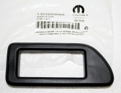
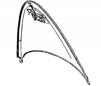
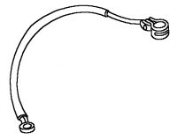
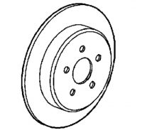
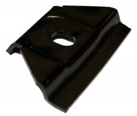
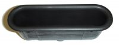

Prowler
10 parts
1992 - 1998 Viper Left Hand Door Handle Bezel - 0TT06DX9AA Dodge
Part # 0TT06DX9AA
$149.00

1992 - 1998 Viper Right Hand Door Handle Bezel - 0TT07DX9AA Dodge
Part # 0TT07DX9AA
$149.00

1997 - 2002 Chrysler Plymouth Prowler Hood - 04874314
Part # 04874314
$2,035.00

1997 - 2002 Chrysler Plymouth Prowler Negative Battery Cable - 04786689
Part # 4786689
$40.00

Out of stock1997 - 2002 Chrysler Plymouth Prowler Rear Brake Rotor - 04815750
Part # 04815750
$999.00

2003 - 2010 Dodge Viper SRT10 Battery Retainer - 05202588
Part # 05202588
$39.00
 Out of stock
Out of stockFalken Azenis FK453 Tire Set for Chrysler Plymouth Prowler - 295/40-20 225/45-17
$820.00

Prowler Interior Door Cup Pull - 0HE36LAZAB
Part # 0HE36LAZAB
$43.75

Prowler Transmission Input Speed Sensor - 4800878
Part # 4800878
$23.00

Prowler Transmission Output Speed Sensor - 4800879
Part # 4800879
$23.00